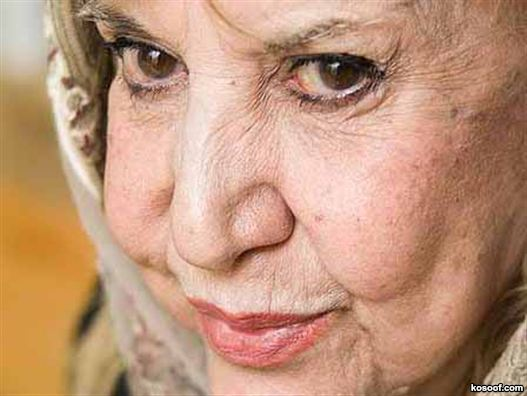

پذيرش > سایت نوشته ها > زبان فارسی را نمیشود اخته کرد / گفتگو با سیمین بهبهانی


 زبان فارسی را نمیشود اخته کرد / گفتگو با سیمین بهبهانی زبان فارسی را نمیشود اخته کرد / گفتگو با سیمین بهبهانی
28 مرداد 1390 - - نسخه قابل چاپ
زمانی که انتشارات «پیدایش» برای هشتمین دور انتشار منظومه «خسرو و شیرین» تصمیم به تغییر قطع کتاب گرفت و برای گرفتن مجوز برای این تغییر ظاهری منظومه«خسرو و شیرین» را به وزارت ارشاد فرستاد، با این پاسخ مواجه شد؛ چاپ هشتم در صورتی امکانپذیر است که بخشهایی از این منظومه حذف شوند.
از جمله مواردی که وزارت ارشاد انتشار منظومه عاشقانه «خسرو و شیرین» را مشروط به حذف آنها کرده بود، عبارات «به خلوت رفتن»، «در آغوش کشیدن» و مسائلی نظیر گرفتن دست و نوشیدن باده بود.
سیمین بهبهانی، شاعر ایرانی و عضو انجمن نویسندگان ایران در مورد حذف این مفاهیم میگوید:
سیمین بهبهانی: از اول انقلاب تا به حال ما همین بساط را داشتیم. بسیاری از اوقات لغت «بوسه» را برداشتهاند، «دوست داشتن» را برداشتهاند، «در آغوش کشیدن» را برداشتهاند.
زبان فارسی را نمیشود اخته کرد. داستان نظامی تازگی ندارد. این داستان ۹ قرن است که در ایران خوانده میشده و در تمام این ۹ قرن، ایران مسلمان بوده است، مردمش مسلمان بودهاند و هیچ کدام ایرادی نگرفتهاند.
مثلا هیچ وقت به فکرش نبودند که قصه شب زفاف شیرین و خسرو را از قصه نظامی بردارند. اگر می خواستند این قصه را از آثار نظامی حذف کنند که چیزی از قصه شیرین و خسرو باقی نمیماند.
شرم دارم که این حرف را بزنم. ما نباید دست به ادبیاتمان بزنیم. ما نباید ادبیات این مملکت را دست کم بگیریم و بگوییم هر جایش را که دلمان خواست برمیداریم و هر جایش که دلمان خواست را باقی میگذاریم. مگر این آرد و خمیر است که آدم دست بزند و بردارد و بعدش به آن اضافه کند؟
خیلی خیلی وحشتناک است. واقعا من دلم برای ادبیات این مملکت میسوزد. این وزارت ارشاد واقعا مایوس کننده است. سه سال و چهار سال کتابهای من و یاران و دوستان من را در وزارت ارشاد نگه داشتند، بعدا دست نوشتههای ما را پس دادند و اجازه چاپ ندادند.
آخر ما به کجا داریم میرویم. ادبیات که دیگر مبارزه نیست. ادبیات که دیگر شمشیر نیست.ادبیات که اسلحه ندارد. ادبیات زبان فارسی است، ما چرا زبان فارسی را داریم به باد میدهیم؟
خانم بهبهانی، خبرگزاری مهر از قول مدیر بخش فرهنگی انتشارات پیدایش که منظومه خسرو و شیرین را هفت بار پیشتر چاپ کرده، نوشته است که بخشی از داستان درباره این است که خسرو را در خواب کشتهاند و حالا شیرین زانو میزند و جسد خسرو را در آغوش میکشد. اینجاست که اداره ارشاد میخواهد این قسمت را سانسور کند. به نظر شما آیا چنین چیزی سابقه داشته است؟
اصلا. در ادبیات ما چنین ناسوری هرگز سابقه نداشته است. هیچ کدام از این کتابها دست نخورده است. اگر یک کلام از شعر حافظ را میخواستند جا به جا کنند، مثل این بود که دنیا زیر و رو میشد.
سعدی، حافظ و تمام شاعران ما ، نزدیکترین و احساسیترین لحظات عشق و عاشقی را توضیح و تشریح کردهاند و هیچ کس تا به حال دست نزده است، برای اینکه ادبیات ما این است.
خود سعدی واعظ بوده است. آنقدر نکاتی دارد که آدم موقع خواندن حیرت میکند، مردم آن را روی چشمشان گذاشتهاند و تاریخ ما را به روی کاغذهای پوست آهو و پوست درخت حفظ کرده و نگاه داشتهاند.
این تاریخ حفظ شده است تا امروز. اما این روزگار ما میخواهیم این تاریخ را به هم بزنیم.
به اعتقاد شما در آغوش کشیدن جنازه خسرو توسط شیرین چه مانع دینی و شرعی دارد؟
در این مملکتی که بچه کوچک و بیچاره را به زندان میبرند و به او تجاوز میکنند ، امیدوارم این مسائل دروغ باشد اما ما هم بارها شنیدهایم. کسانی که میتوانند به یک موجود پاک و ظریف و معصوم تجاوز کنند، آیا ممکن نیست که قضاوت کنند که در آغوش کشیدن جسد یک مرده میتواند لذت بخش باشد؟
فکر میکنم اینها به خودشان و تفکراتشان نگاه میکنند و بعد میآیند این کارها را انجام میدهند.
خانم بهبهانی، به تصورشما که عضو انجمن نویسندگان هستید، واکنش فرهنگ دوستان، نویسندگان و شعرا به چنین تغییری در منظومه خسرو و شیرین نظامی چه خواهد بود؟
اجازه بدهید که پاسخ شما را در یک بیت شعر خلاصه کنم که شاعر میگوید: گوش اگر گوش تو و ناله اگر ناله من / آنچه البته به جایی نرسد فریاد است.
ما فریادها کردهایم و به جایی نرسیدهایم. متاسفانه بزرگان ادب ما زبان به کام گرفته و خاموشند و چیزی نمیگویند و من نمیدانم در آخر این وضعیت به کجا خواهد رسید.
استادان ما برای جابهجایی یک کلمه یقهشان را جر میدادند، ولی حالا برای برداشتن یک سطر و یک ستون یا یک بخش از آثار قدما ، ما بایستی بنشینیم و تماشا کنیم.
اگر واقعا اولیای کشور به ادبیات این سرزمین بها میدهند، اگر اهمیت میدهند به اینکه وضع آبرومندی در دنیا داشته باشیم، و میخواهند که ادبیات ما در دنیا مطرح شود و میخواهند که ادبیات گذشته ما از بین نرود،ازاین وزارت ارشاد بخواهند که نفس شاعر و نویسنده را خفه نکند.
والله سه سال چهار سال کتابهای ما در ارشاد میماند و بعد هم اجازه چاپ به آن داده نمیشود و به خود ما و خانههای ما بر میگردانند.
این مسئله واقعا زشت و دردناک است. آخر مگر ما نویسندگان و شاعران چه میگوییم ؟
رادیو فردا
ارسال به
بالاترین
،
توییتر
،
فریندفید
،
فیسبوک
در همين بخش :
 یک خبر تلخ؟ یک قانونشکنی؟ یک تصمیم بخشنامهای جدید؟ یک خبر تلخ؟ یک قانونشکنی؟ یک تصمیم بخشنامهای جدید؟
چرا بایست به سکسوالیته پرداخت؟ / نفیسه آزاد
آزارجنسی خانگی؛ «قربانی» نه، «نجات یافته»
زنان، بزرگترین بازندگان بهار عرب
سانسور از دیدگاه جنسیتی/الهه امانی
ديگر بخش ها :
طرح یک میلیون امضا
|
مقالات
|
سایت نوشته ها
|
اخبار
|
گزارش كمپين
|
گفت و گو
|
علیه سکوت
|
كوچه به كوچه
|
نامه های شما
|
گزارش ویژه
|
گفتگو با اعضا
|
ویژه سالگرد کمپین
|
تصویر برابری
|
دل آرام علی
|
تریبون
|
مقالات
|
تاریخ شفاهی
|
خارج از چارچوب
|
کتابخانه
|
درباره کمپین
|
کمپین در شهرها
|
کمپین در بند
|
صدای تغییر
|
ویژه 22 خرداد
|
لایحه حمایت از خانواده
|
گالری
|
عشا مومنی
|
امیر یعقوبعلی
|
خدیجه مقدم
|
راحله عسگری زاده و نسیم خسروی
|
پروین اردلان،جلوه جواهری، مریم حسین خواه، ناهید کشاورز
|
زینب پیغمبرزاده
|
سعیده امین، سارا ایمانیان، محبوبه حسین زاده، ناهید کشاورز و همایون نامی
|
احترام شادفر
|
نسیم سرابندی زاده،فاطمه دهدشتی
|
وبلاگ مهمان
|
پرونده خرم آباد
|
دستگیری ها
|
مریم مالک
|
پرستو اللهیاری
|
مهرنوش اعتمادی
|
سمیه رشیدی
|
Other Languages
|
همراهان
|
«فراخوان کمپین ده روز با بهاره هدایت»
| English
|